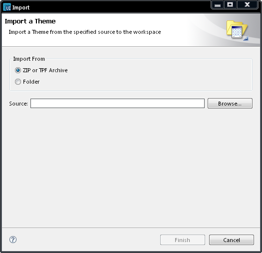

Importing themes
You can import only .tpf or .zip files into Carbide.ui, but this option
does not create a project for the .tpf file. Since the .tpf file is a
zip file that contains the .tdf theme file, you have to unzip the .tpf
file and open the .tdf file contained inside the zip file to access the
theme.
Follow the instructions below to import a theme:-
In the Menu bar, select File ->
Import.
The Import
wizard opens.
In the Import
Source field,
select the import source by clicking Browse.
You can select the following formats provided in the Import Theme
window (you can select TPF
or ZIP
archive or folder).
Select the directory and Click Finish.
If similar files or folders already exist in the chosen folder, the
system asks you whether you want to overwrite the existing component
types. Select Yes or No, as necessary.

Figure:
Import Theme
Note:
You can import .tpf files
into Carbide.ui. *.tpf files is a zip file that contains the
*.tdf theme file. You have to unzip the *.tpf file and open the *.tdf
file inside the zip file to access the theme.